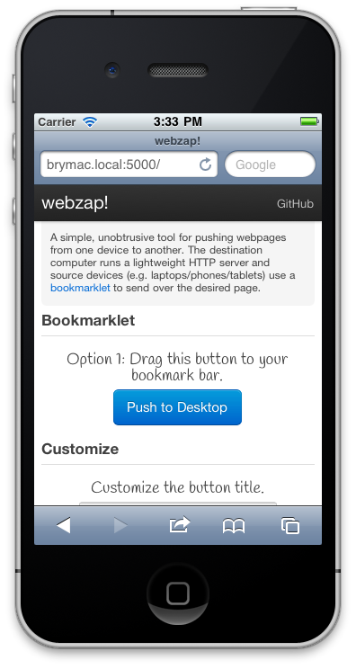

Webzap is:
- A lightweight server component that runs on one of your computers.
- A bookmarklet used to send pages from your mobile device or laptop to the destination computer.
The server component depends on Python and easy_install (if you're on a Mac, you're good to go). Install it simply by running the following command from a Unix prompt (e.g. OS X's Terminal.app)1:
curl https://raw.github.com/irace/webzap/master/install.sh | bash
This will start Webzap on http://hostname:5000, where hostname is the
computer's name or address on your local network (e.g. 192.168.1.145).
Visit the aforementioned address from your mobile device or laptop, and follow the instructions on screen to add the bookmarklet to your web browser.

When viewing a page that you'd like to read later, choose the bookmarklet from your browser's bookmarks and it will be opened on the destination computer.
- The Flask framework will be download and installed, so if you work on a number of Python projects and would like to keep your dependencies separate, you may want to run this from inside of a virtualenv.